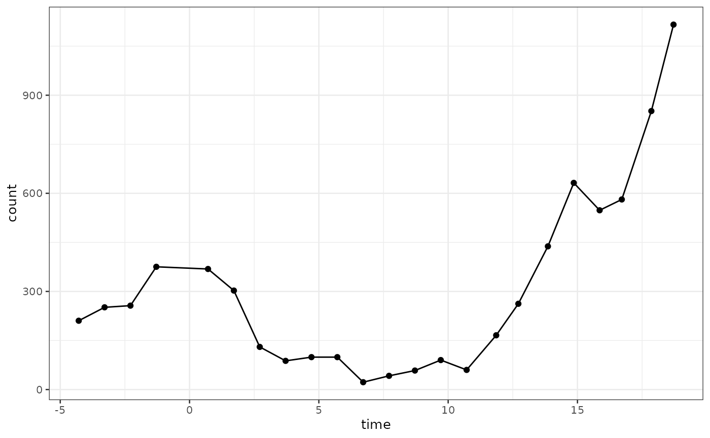
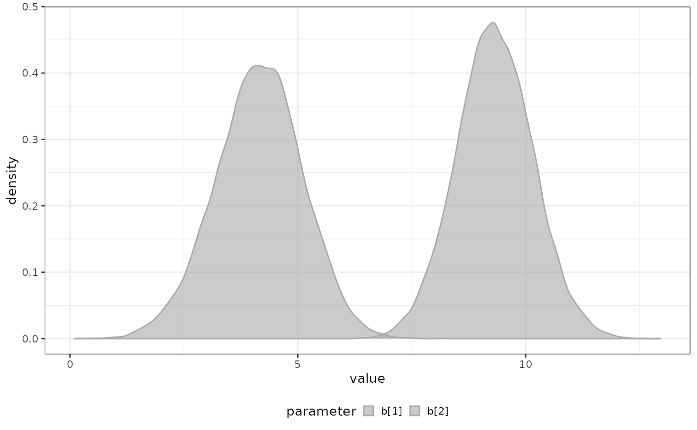
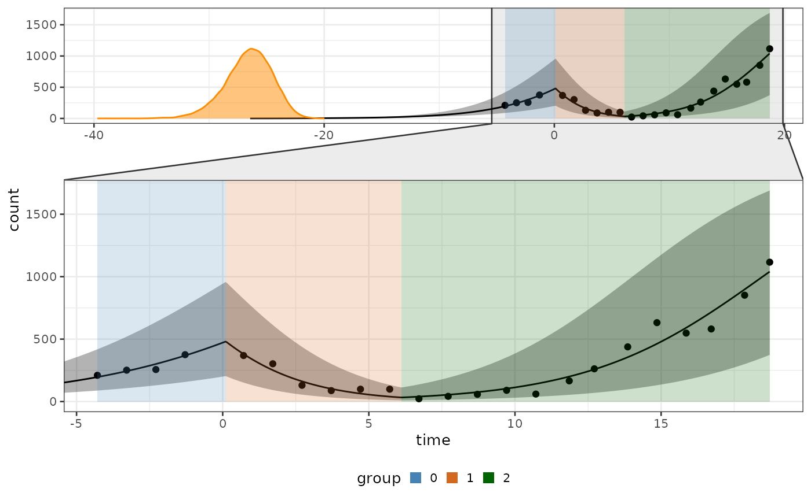
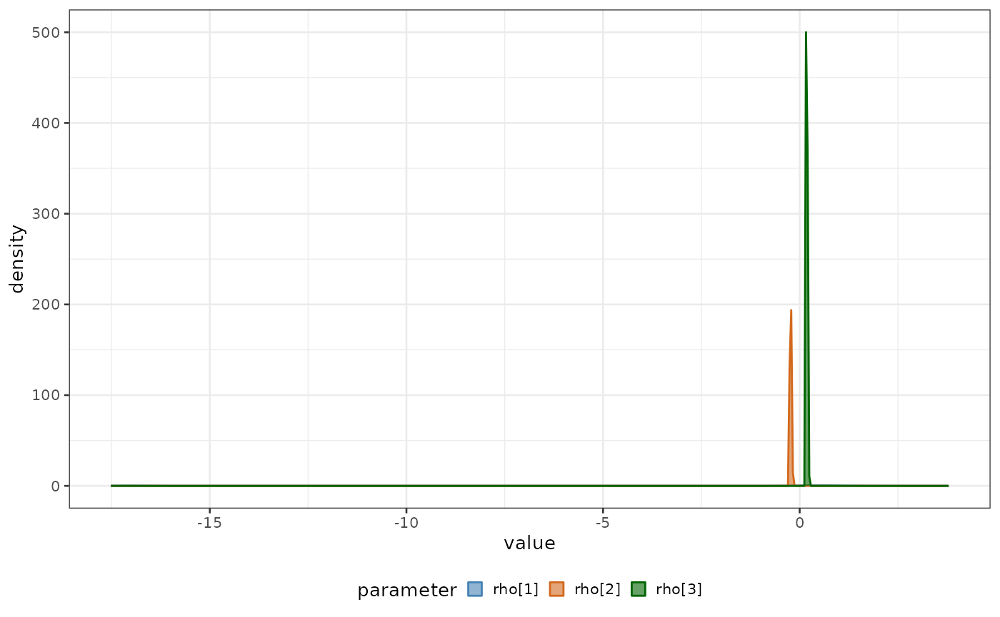

3. Task 0
a3_task2.Rmd
library(biPOD)
require(dplyr)
#> Loading required package: dplyr
#>
#> Attaching package: 'dplyr'
#> The following objects are masked from 'package:stats':
#>
#> filter, lag
#> The following objects are masked from 'package:base':
#>
#> intersect, setdiff, setequal, unionIn the previous task we assumed that the break points, i.e. the instant of time in which the latent dynamics changes abruptly, were know a priori. However, this is often not the case and one might be interested in inferring them.
Input data
We take the xenografts data and we make it ready for
inference by preparing the count column and by dividing the
time column by a factor of 7 (in order to work with a unit
of time of a week).
We select the sample 543, already presented in the previous vignette.
Breakpoints inference
You can infer the breakpoints in the following way. After having
initialized a bipod object with no breakpoints you can use
the function breakpoints_inference.
If you reasonably know the possible number of breakpoints, you should
pass a vector to the available_changepoints
x <- biPOD::init(d, sample = mouse_id, break_points = NULL)
#>
#> ── biPOD - bayesian inference for Population Dynamics ──────────────────────────
#> ℹ Using sample named: 543.
#> ! No group column present in input dataframe! A column will be added.
biPOD::plot_input(x)
x <- biPOD::fit_breakpoints(x, norm = F, n_trials = 200, avg_points_per_window = 4, max_breakpoints = 3)
#> Intializing breakpoints
#> Breakpoints optimization
#> Choosing optimal breakpoints
#> ℹ Median of the inferred breakpoints have been succesfully stored.The inferred breakpoints are now stored in the
metadata$breakpoints field.
print(x$metadata$breakpoints)
#> par1
#> 7.933023Breakpoints
The the inferred breakpoints can be found in the
metadata of the biPOD object.
biPOD::plot_input(x) +
ggplot2::geom_vline(xintercept = x$metadata$breakpoints)
Re-fit task 1
Now that the breakpoints have been inferred one can fit the data
according to the first task simply using the fit function.
Let’s see how it works on one example.
x <- biPOD::fit(
x,
growth_type = "both",
infer_t0 = F
)
#> ℹ Fitting with model selection.
#> ℹ Model selection finished!
#> ℹ Model with "Logistic" growth deemed better with "Decisive" evidence. (BF = 357984411.456748)And let’s look at the final result.
biPOD::plot_fit(x)
biPOD::plot_posteriors(
x,
x_fit = x$fit,
par_list = c("rho[1]", "rho[2]", "rho[3]", "rho[4]")
)
#> Warning: Removed 2 rows containing non-finite outside the scale range
#> (`stat_density()`).